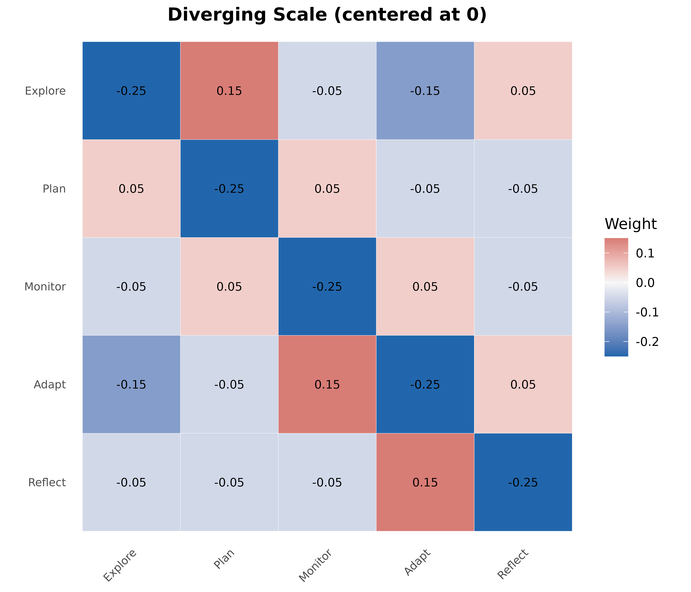
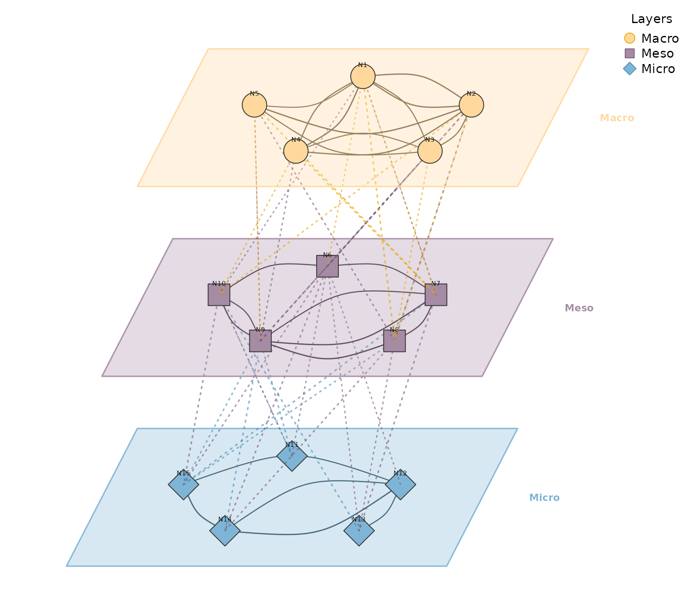
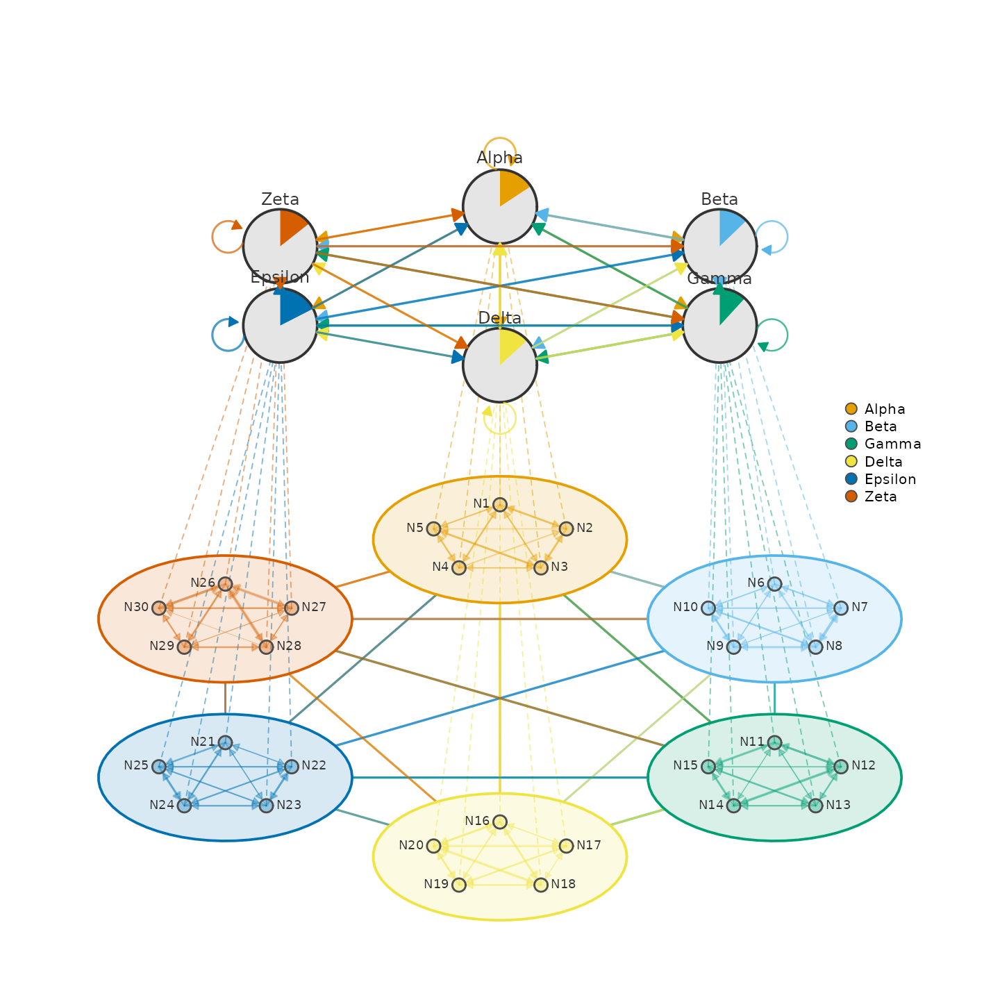

Network with CI and P-values
Sophisticated edge labels showing confidence intervals and significance.
# 9 named nodes
nodes9 <- c("Explore", "Plan", "Execute", "Monitor",
"Adapt", "Reflect", "Regulate", "Review", "Learn")
# Denser weight matrix
set.seed(99)
mat9 <- matrix(runif(81, 0, 0.5), 9, 9, dimnames = list(nodes9, nodes9))
diag(mat9) <- 0
# Keep ~60% of edges
mat9[mat9 < 0.2] <- 0
# Generate CI bounds and p-values
set.seed(42)
ci_lower <- mat9 * runif(81, 0.6, 0.8)
ci_upper <- mat9 * runif(81, 1.2, 1.4)
pvals <- matrix(NA, 9, 9)
pvals[mat9 > 0] <- runif(sum(mat9 > 0), 0.0001, 0.08)
splot(mat9,
layout = "circle",
node_size = 8,
node_fill = "#4A90A4",
node_border_color = "#2C5F6E",
node_border_width = 2,
label_size = 0.6,
edge_color = "#666666",
edge_width = 1.5,
curvature = 0.15,
edge_ci_lower = ci_lower,
edge_ci_upper = ci_upper,
edge_label_p = pvals,
edge_label_stars = TRUE,
edge_label_style = "full",
edge_label_size = 0.65,
edge_label_color = "#800020"
)
Network with Significance Stars Only
Clean edge labels showing just weight and significance stars.
splot(mat9,
layout = "circle",
node_size = 8,
node_fill = "#6B8E23",
node_border_color = "#3D5214",
node_border_width = 2,
label_size = 0.6,
edge_color = "#555555",
edge_width = 1.5,
curvature = 0.15,
edge_label_p = pvals,
edge_label_stars = TRUE,
edge_label_template = "{est}{stars}",
edge_label_size = 0.8,
edge_label_color = "#800020"
)
Double Donut Progress Rings
Nested progress rings showing two metrics per node.
# Create a simple network
mat10 <- matrix(runif(100, 0, 0.3), 10, 10)
diag(mat10) <- 0
colnames(mat10) <- rownames(mat10) <- LETTERS[1:10]
set.seed(6)
outer_fills <- runif(10, 0.4, 0.9)
inner_fills <- runif(10, 0.3, 0.8)
splot(mat10,
layout = "circle",
node_shape = "donut",
donut_fill = outer_fills,
donut_color = "steelblue",
donut2_values = inner_fills,
donut2_colors = "coral",
node_size = 9,
label_size = 0.6
)
Donut with Pie Slices
Combining progress ring with categorical pie chart.
set.seed(5)
fills <- runif(10, 0.5, 0.9)
pie_vals <- lapply(1:10, function(i) runif(3))
pie_cols <- c("#E41A1C", "#377EB8", "#4DAF4A")
splot(mat10,
layout = "circle",
node_shape = "donut",
donut_fill = fills,
donut_color = "steelblue",
pie_values = pie_vals,
pie_colors = pie_cols,
node_size = 9,
label_size = 0.6
)
Node Shapes Gallery
All available node shapes with edge labels.
shapes <- c("circle", "square", "triangle", "diamond", "pentagon",
"hexagon", "ellipse", "heart", "star", "cross")
splot(mat10,
layout = "circle",
node_shape = shapes,
node_fill = palette_rainbow(10),
node_size = 10,
node_border_width = 2,
label_size = 0.6,
edge_labels = TRUE,
edge_label_size = 0.4
)
Diverging Scale Heatmap
For matrices with positive and negative values.
states <- c("Explore", "Plan", "Monitor", "Adapt", "Reflect")
mat <- matrix(
c(0.0, 0.4, 0.2, 0.1, 0.3,
0.3, 0.0, 0.3, 0.2, 0.2,
0.2, 0.3, 0.0, 0.3, 0.2,
0.1, 0.2, 0.4, 0.0, 0.3,
0.2, 0.2, 0.2, 0.4, 0.0),
nrow = 5, byrow = TRUE,
dimnames = list(states, states)
)
# Create matrix with negative values
mat_div <- mat - 0.25
plot_heatmap(mat_div,
colors = "diverging",
midpoint = 0,
title = "Diverging Scale (centered at 0)",
show_values = TRUE,
value_size = 3
)
Multilayer Network
Stacked network layers with 3D perspective view.
set.seed(42)
nodes <- paste0("N", 1:15)
ml_mat <- matrix(runif(225, 0, 0.3), 15, 15)
diag(ml_mat) <- 0
colnames(ml_mat) <- rownames(ml_mat) <- nodes
layers <- list(
Macro = paste0("N", 1:5),
Meso = paste0("N", 6:10),
Micro = paste0("N", 11:15)
)
plot_mlna(ml_mat, layers,
layout = "circle",
layer_spacing = 5,
layer_width = 10,
node_spacing = 0.9,
node_size = 6,
between_edges = TRUE,
between_style = 3,
curvature = 0.2,
minimum = 0.2,
scale = 2
)
Multilayer Heatmap
3D perspective heatmaps with inter-layer connections.
set.seed(123)
nodes <- c("A", "B", "C", "D")
layers <- list(
"Layer 1" = matrix(runif(16, 0, 0.5), 4, 4, dimnames = list(nodes, nodes)),
"Layer 2" = matrix(runif(16, 0, 0.5), 4, 4, dimnames = list(nodes, nodes)),
"Layer 3" = matrix(runif(16, 0, 0.5), 4, 4, dimnames = list(nodes, nodes))
)
for (i in seq_along(layers)) diag(layers[[i]]) <- 0
plot_ml_heatmap(layers,
colors = "plasma",
layer_spacing = 3,
skew = 0.5,
show_connections = TRUE,
connection_color = "#2E7D32",
title = "Custom Style"
)
Multi-Cluster Multi-Layer Network
Two-layer visualization with detailed clusters below and summary network above.
set.seed(42)
m <- matrix(runif(900, 0, 0.3), 30, 30)
diag(m) <- 0
colnames(m) <- rownames(m) <- paste0("N", 1:30)
clusters <- list(
Alpha = paste0("N", 1:5),
Beta = paste0("N", 6:10),
Gamma = paste0("N", 11:15),
Delta = paste0("N", 16:20),
Epsilon = paste0("N", 21:25),
Zeta = paste0("N", 26:30)
)
plot_mcml(m, clusters)
Multi-Cluster Network
Clustered network with summary edges between clusters.
# Create network with 6 clusters
set.seed(42)
nodes <- paste0("N", 1:30)
m_clust <- matrix(runif(900, 0, 0.3), 30, 30)
diag(m_clust) <- 0
colnames(m_clust) <- rownames(m_clust) <- nodes
clusters6 <- list(
Alpha = paste0("N", 1:5),
Beta = paste0("N", 6:10),
Gamma = paste0("N", 11:15),
Delta = paste0("N", 16:20),
Epsilon = paste0("N", 21:25),
Zeta = paste0("N", 26:30)
)
# Circle layout with edge labels
clusters6_unnamed <- setNames(clusters6, NULL)
plot_mtna(m_clust, clusters6_unnamed,
spacing = 4,
shape_size = 1.3,
node_spacing = 0.6,
minimum = 0.2,
legend = FALSE,
edge.lwd = 0.2,
edge.label.cex = 0.5
)